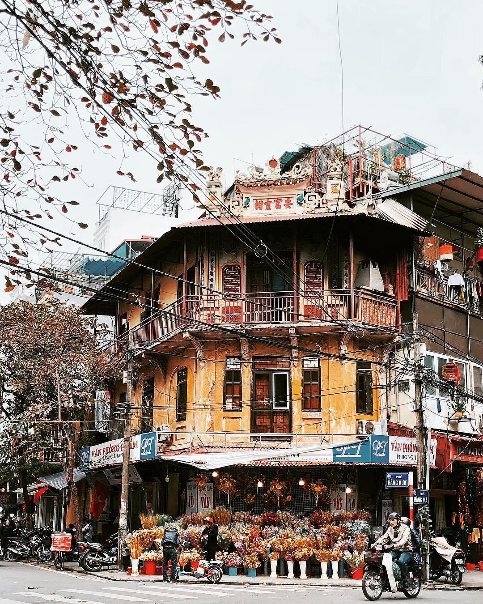
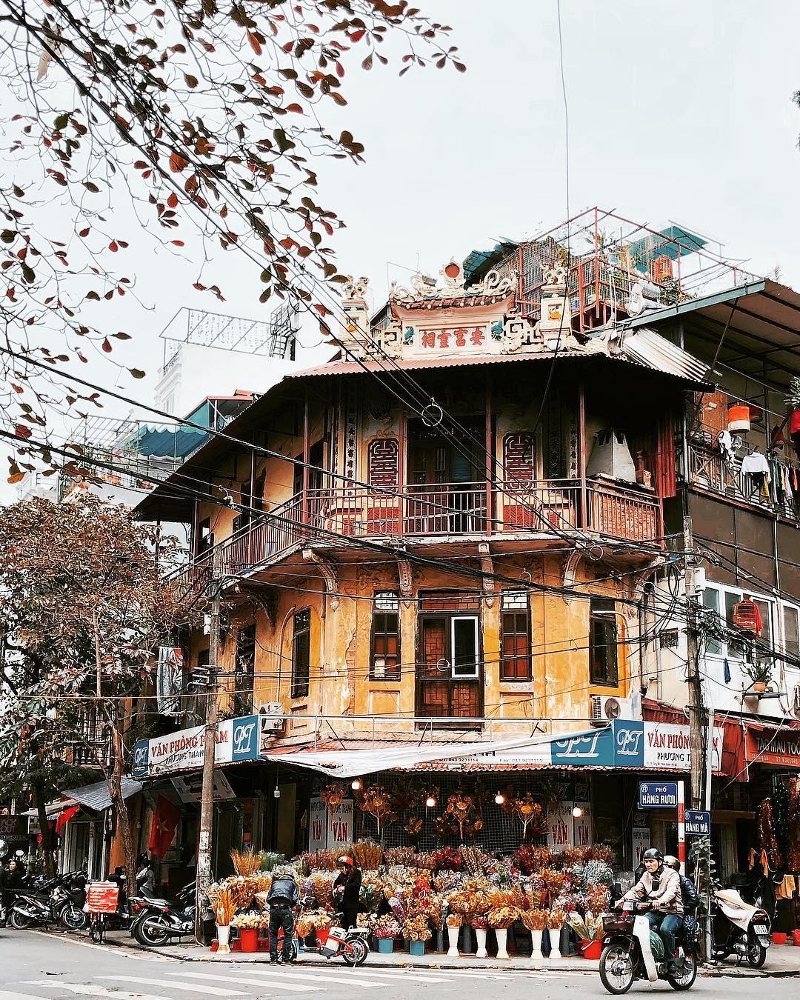

Introduction about Ha Noi

Thủ đô Hà Nội ngày nay hình thành trong lịch sử dân tộc Việt Nam chính thức vào năm 1010 (mùa thu tháng 7 năm Canh Tuất) với tên gọi đầu tiên là Thăng Long. Trước đó có tên là Đại La. Nhờ vị trí đắc địa, vùng đất rộng lớn, bằng phẳng và trù phú ấy đã sớm trở thành trung tâm văn hoá và giao thương của Đại Việt.
Thủ đô Hà Nội thuộc đồng bằng sông Hồng, được sông Hồng và các phụ lưu bồi đắp tạo nên, do đó Hà Nội gắn bó với sông Hồng mật thiết như con với mẹ. Xưa kia người ta đã gọi sông Hồng là sông Cái – sông Mẹ. Tên gọi Hà Nội có ý nghĩa là vùng đất bên trong sông. Phía bắc giáp tỉnh Vĩnh Phúc và Thái Nguyên, phía tây giáp tỉnh Vĩnh Phúc, phía đông giáp tỉnh Bắc Ninh và Hưng Yên, phía nam giáp tỉnh Hoà Bình. Hà Nội nằm ở vị trí trung tâm đồng bằng Bắc Bộ trù phú và nổi tiếng từ lâu đời. Vị trí và địa thế đẹp, thuận lợi để trở thành trung tâm chính trị, kinh tế, văn hoá, khoa học và đầu mối giao thông quan trọng của cả nước.


 
